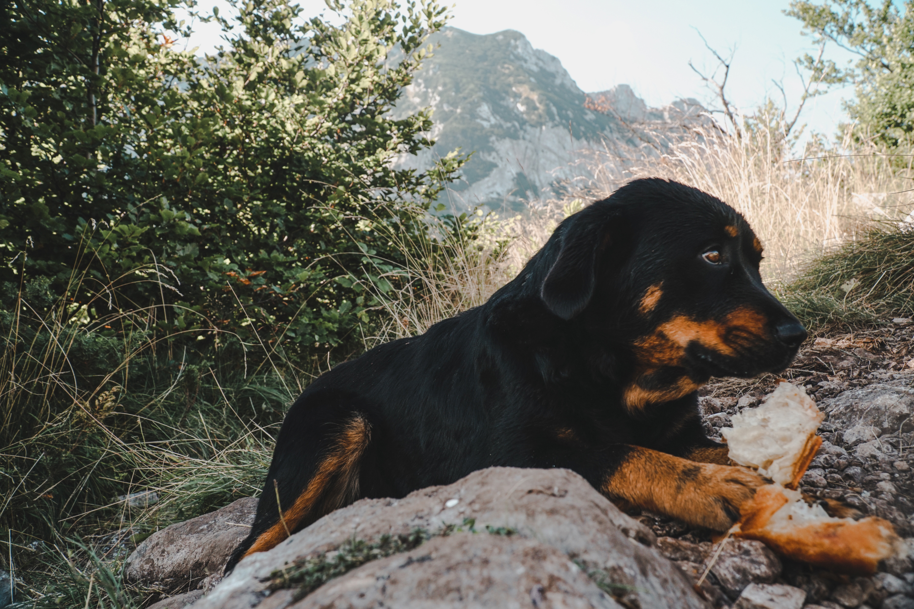
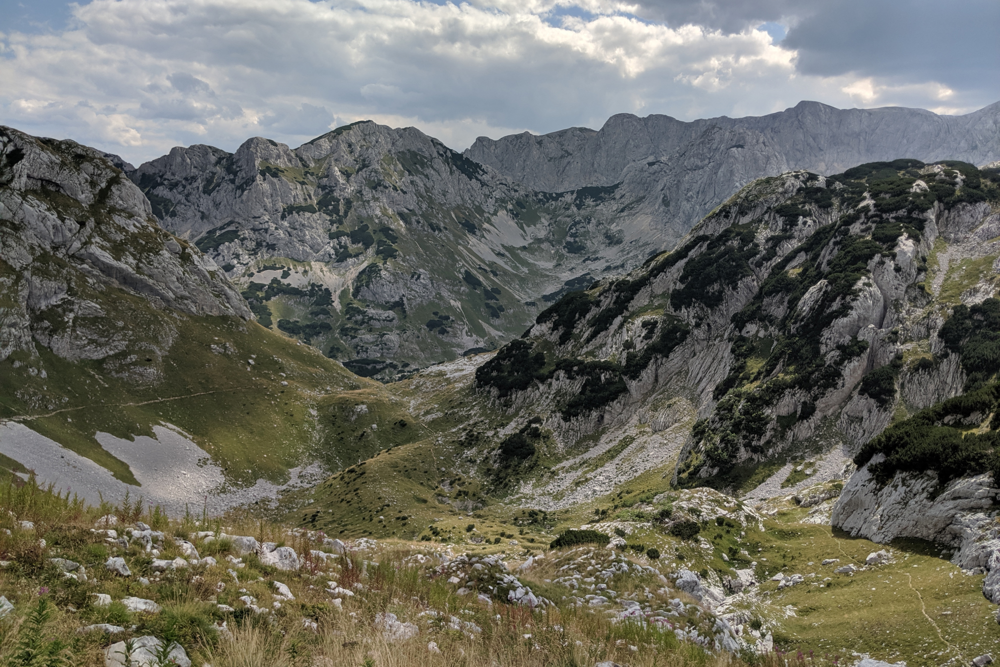
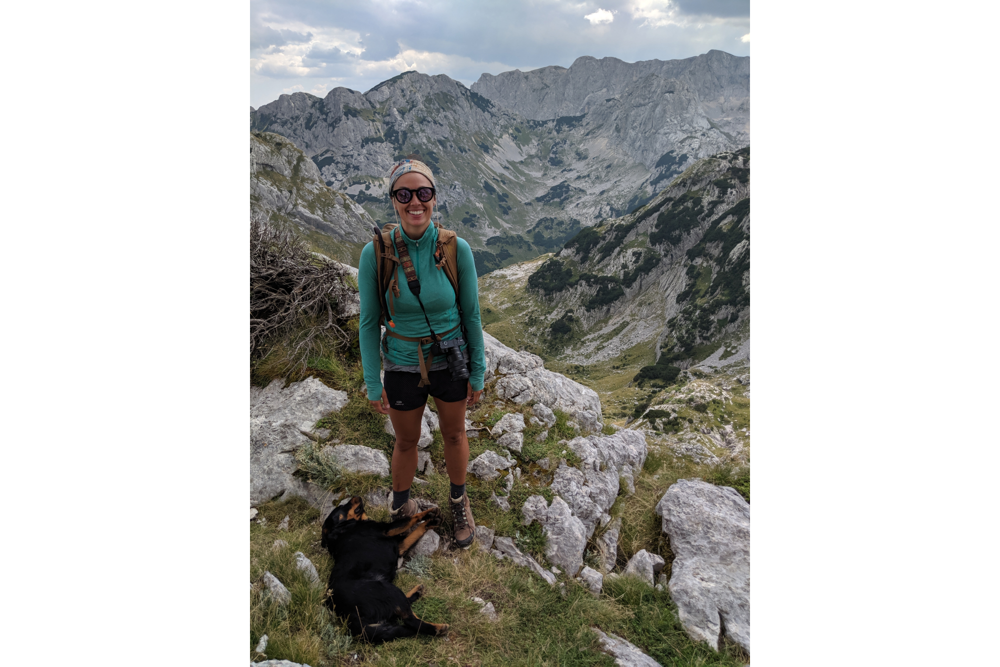
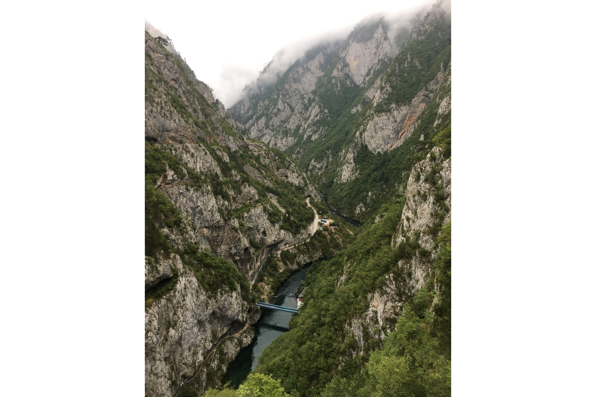

Meat Pie was a dog who brightened our day at 7am when we started our hike from the center of town. Some medium size Rottweiler mutt trotted along with us for majority of the day, up a steep 10km hiking loop that involved rock scrambling and cliff edges. We named him Meat Pie because about a quarter of the way up the trail we ran into a Russian dude wearing camo pants, a Michael Jordan Bulls Jersey, and eating a Börek which is a traditional Serbian meat pastry. He gave the rest of the pastry to the dog and took off on the trail. We quickly forgot the name Börek so we called the dog ‘Meat Pie’ instead. Meat pie was a champ and stuck with us the entire day. As he grew tired towards the end, however, Dan had to carry him part of the way back, only to find out Meat Pie was faking it for a free ride. Once we got back to the beginning of the hike, Meat Pie was chipper as ever and marched up to the next tourist to see if he could eat some more Börek.

Oh, the hike was great to. It started at the Black Lake that had calm water reflecting the rock monoliths jutting out of the lush deciduous forest surrounding it. Made for a beautiful morning with no tourists and a juxtaposition of selfies and instagrammers during the evening sunsets. The hike quickly strays away from the lake up a steep slope through the forest. As you reach the timberline, the landscape opens up to rolling grass fields with granite boulders and monoliths jutting out. Every now and then we would pass these free shelters made for hikers and shepherds that created a scene similar to one found on the cover of Backpacker Magazine. The hike continued to climb until we reached a rock scramble. We though we lost Meat Pie around this time and were worried we might have done harm by letting this stray follow us only to look above the scramble and see Meat Pie’s cute face looking down at us as we’re climbing up this steep scramble. The path leads to an ice cave tucking into one of the giant rock monoliths. A trecherous fall if trying to go in so we had to peer from afar down into the cave where natural ice stalagmites rise up from the ground. A wild site considering the temperature was a blaze in town. The 10km hike was a loop that led right back to where we began. With a little Meat Pie in Dan’s arms and realization that Durmitor is far bigger than what we saw. We could have easily spent a week just exploring the park alone.

Our Airbnb host connected us to a rafting outfitter on the border of Bosnia. For 60 Euro each we joined a full day rafting trip that included pick up, driving tour of Durmitor and Lake Piva, rafting trip on the Tara river, and 2 meals. It was the off season so the water level was low. We were told class 4 and 5 rapids however the off season we were lucky if we got a class 2. Our boat guide was hilarious in that he only knew 4 words in english; forward, backward, stop, and yes. When we tried sparking a conversation it would go something like this, “So how long have you lived in Montenegro?”, he would reply “Yes” with a flat face. Overall the rafting was below bar but the natural beauty of the trip was amazing. The guides stated the Tara River gorge is the second deepest canyon in the world, however after further Google investigation, Tara River doesn’t even rank. It was time to pack the bags yet again and move on.

Our next destination was Shkoder in Albania however the bus route to Albania was not a clear route. Our Google and Rome2Rio investigations gave contradictory paths while Montengran tourist offices were vague and unhelpful. We decided to piece together a route that involved a bus to Podgorica, the capital of Montenegro, and just hope there was a bus that would hop over the border to Albania. We boarded a 7am bus to Podgorica with no troubles and sure enough, found a bus leaving 3 hours later after arrival to Shkoder. Easy peasy.